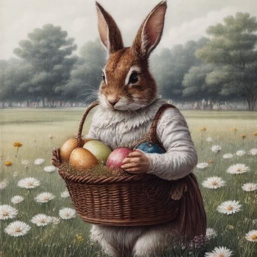
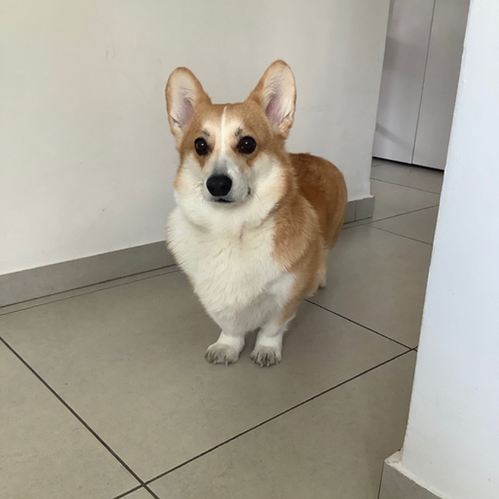

: Diffusion Models Post-Training for Continuous Reward Control
ICCV 2025
TL;DR
We introduce , a multi-objective RL framework that trains a single diffusion model to approximate the entire Pareto front, enabling users to continuously navigate competing reward trade-offs at inference time — such as photorealism vs. style, or prompt adherence vs. source preservation — without retraining or maintaining multiple checkpoints.

Abstract
Reinforcement Learning (RL) post-training has become the standard for aligning generative models with human preferences, yet most methods rely on a single scalar reward. When multiple criteria matter, the prevailing practice of "early scalarization" collapses rewards into a fixed weighted sum. This commits the model to a single trade-off point at training time, providing no inference-time control over inherently conflicting goals — such as prompt adherence versus source fidelity in image editing. We introduce , a multi-objective RL (MORL) framework that trains a single diffusion model to approximate the entire Pareto front. By conditioning the model on continuously varying preference weights during RL alignment, we enable users to navigate optimal trade-offs at inference time without retraining or maintaining multiple checkpoints. We evaluate across three state-of-the-art flow-matching backbones: SD3.5, FluxKontext, and LTX-2. Our single preference-conditioned model matches or exceeds the performance of separately tuned baselines while uniquely providing fine-grained, real-time control over competing generative goals.
Text-to-Image: Style Control
Drag the slider to continuously navigate between photorealism and different artistic styles.

Image Editing: Preservation vs. Adherence
Drag the slider to navigate from full source preservation to full prompt adherence.



Method
introduces a preference vector \(\omega\) that simultaneously serves as a dynamic weight for normalized rewards and as an explicit conditioning input to the network. Because the model is conditioned on \(\omega\), it develops the foresight to produce outputs that abide by the current relative reward preference — enabling it to learn the entire Pareto front within a single set of parameters.
A key challenge is preventing "reward hijacking," where objectives with naturally high magnitudes dominate the learning signal. We address this with a late-scalarization strategy: per-reward advantages are normalized independently before weighted aggregation with \(\omega\). This ensures the optimization landscape is defined strictly by the preference vector, not by the arbitrary raw scales of the underlying reward functions.
We build upon DiffusionNFT, computing NFT losses for each reward independently and aggregating only at the final step. At inference time, users simply adjust a single slider to navigate the full Pareto front in real time.

ParetoSlider training pipeline. (1) For each prompt and sampled \(\omega\), the policy generates \(K\) images, (2) which are scored by \(M\) reward models and normalized into per-reward advantages. (3) A DiffusionNFT loss is computed per reward and aggregated with \(\omega\) before the gradient update.